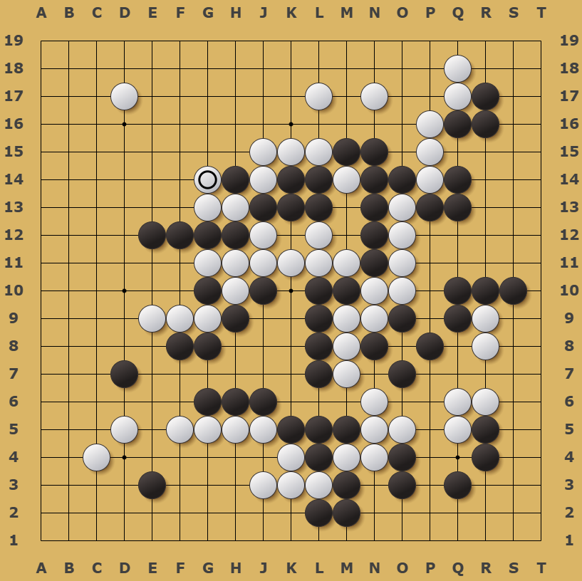

Sumário do Site
Regras do Jogo
O Go é um jogo de estratégia abstrata com mais de 2.500 anos, onde o objetivo é cercar mais território que o oponente. Veja as 9 regras básicas do jogo:
- 1. Go é jogado entre dois jogadores.
- 2. Um dos jogadores usa as pedras brancas e o outro as pretas. (Os jogadores se revezam colocando as pedras no tabuleiro, uma a uma. O primeiro movimento, isto é, a colocação da primeira pedra no tabuleiro, é feito pelas Pretas. Num jogo com “handicap”, entretanto, Brancas jogam primeiro.)
- 3. A pedra deve ser colocada em um dos cruzamentos.
- 4. A pedra, uma vez colocada, não pode ser retirada (exceto quando se aplica a regra número 6).
- 5. O jogador que obtem mais território ganha o jogo.
- 6. As pedras que perderem suas liberdades, ou “espaço para respirar”, são retiradas do tabuleiro.
- 7. Nenhuma pedra pode ser colocada num cruzamento onde não tenha liberdade.
- 8. Há restrições especiais nos movimentos de um jogador, na situação chamada Ko.
- 9. Regra referente ao jogo com “handicap” ou vantagem.
Veja as regras detalhadas em: https://baduk.com.br/regras-detalhadas/
Dica de Abertura: Comece pelos cantos, depois as laterais e, por fim, o centro. O "Star Point" (Hoshi) é o ponto de partida mais comum.

IA & AlphaGo
Para nós da computação, o Go é fascinante pela sua complexidade combinatória. Segundo a Wikipedia o cientista da computação Victor Allis observa que partidas típicas entre jogadores de alto nível duram cerca de 150 jogadas, com uma média de aproximadamente 250 escolhas por jogada, o que sugere uma complexidade da árvore de jogo de 10360. Para se ter uma ideia o número de átomos no universo é estimado em cerca de 1080.
O AlphaGo, desenvolvido pela DeepMind, revolucionou a área ao combinar Monte Carlo Tree Search (MCTS) com redes neurais profundas (Deep Learning). Ele não apenas venceu Lee Sedol, mas introduziu jogadas que muitos dos melhores jogadores de Go caracterizaram como pouco ortodoxas com movimentos aparentemente questionáveis que inicialmente confundiram os espectadores, mas faziam sentido em retrospectiva. Ele foi um marco na história do jogo, estabelecendo um novo estilo de jogo moderno.
Documentário: AlphaGo - The Movie
Assista à jornada completa da DeepMind ao enfrentar o lendário Lee Sedol.
| Característica | Xadrez | Go (Baduk) |
|---|---|---|
| Tamanho do Tabuleiro | 8 x 8 (64 casas) | 19 x 19 (361 interseções) |
| IA que venceu o Campeão Mundial | Deep Blue (IBM, 1997) | AlphaGo (DeepMind, 2016) |
| Fator de Ramificação (Média) | ~35 movimentos possíveis | ~250 movimentos possíveis |
Ferramentas de Análise
A ferramenta mais poderosa atualmente para estudo é o KataGo. Diferente do AlphaGo, ele é aberto e permite analisar pontuações e probabilidades de vitória em qualquer posição do tabuleiro.
Uma das interfaces de código aberto para KataGO é o KaTrain e pode ser encontrado no GitHub https://github.com/sanderland/katrain
Código Aberto Neural NetworkMinha Rotina de Estudos
BadukPop e OGS
Uso o aplicativo BadukPop para resolver Tsumegos (problemas de vida e morte) e jogar partidas rápidas com tempo controlado como por exemplo máximo de 24h para cada movimento. É excelente para treinar o reconhecimento de padrões e me permite seguir com o hobby mesmo com pouco tempo disponível.
Já o OGS (online-go.com) é um dos maiores e mais populares servidores de Go (Weiqi/Baduk) online do mundo. Ele funciona diretamente no navegador, sem necessidade de instalação de software, tornando-o extremamente acessível para jogadores de todos os níveis. Atualmente não estou jogando muito pois tenho preferido jogar pelo aplicativo BadukPop que me da mais flexibilidade para jogar rapidamente em diferentes momentos do dia.
Retomada Pós-Pandemia
Conheci o jogo online durante a pandemia. Após um bom tempo sem jogar, estou retomando meus estudos revisando as aberturas (Fuseki) e resolvendo Tsumegos que são problemas de "vida e morte" onde o objetivo é encontrar a sequência correta de movimentos para capturar um grupo de pedras inimigo ou salvar o seu próprio grupo.
Sobre o Autor
Guilherme
Estudante de Licenciatura em Computação e Robótica Educativa na UFRGS. Este projeto une minha paixão por jogos milenares com a fronteira da inteligência artificial e educação.